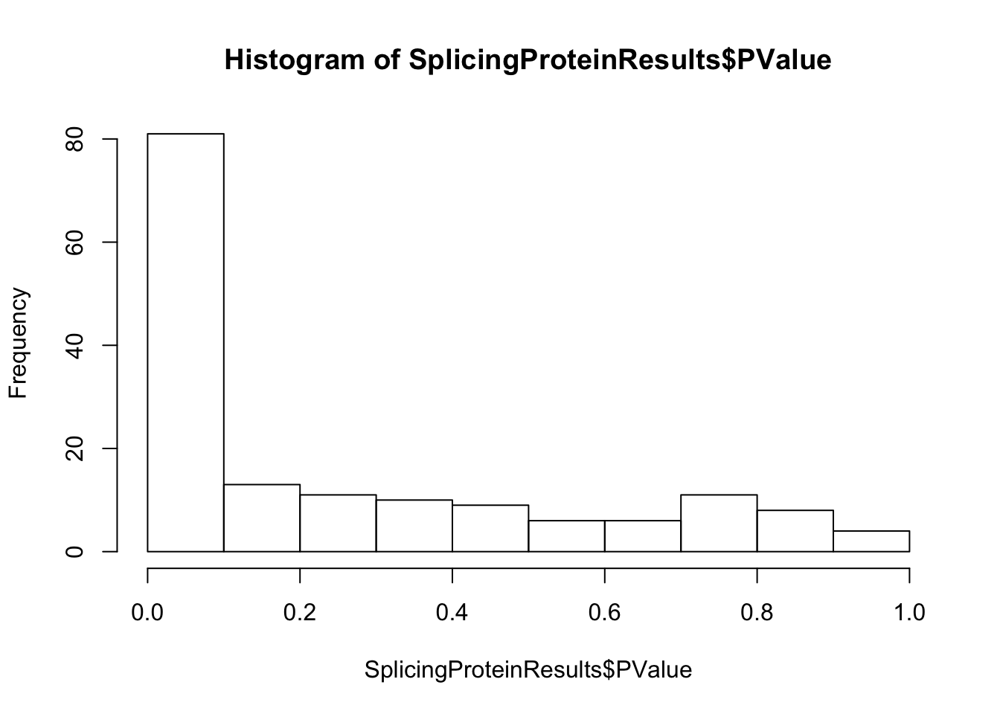
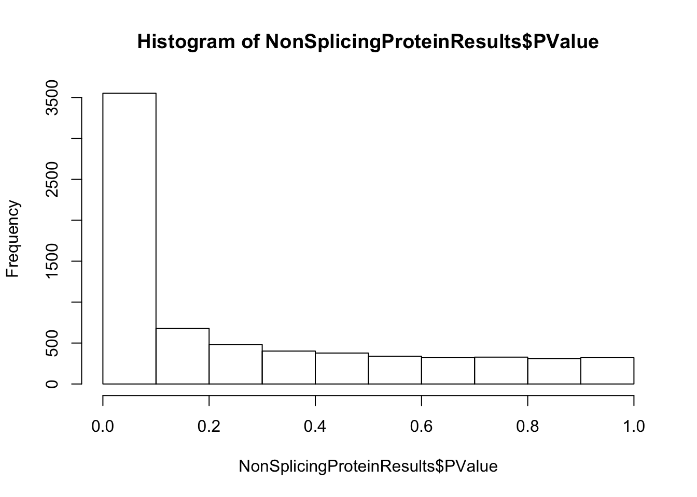
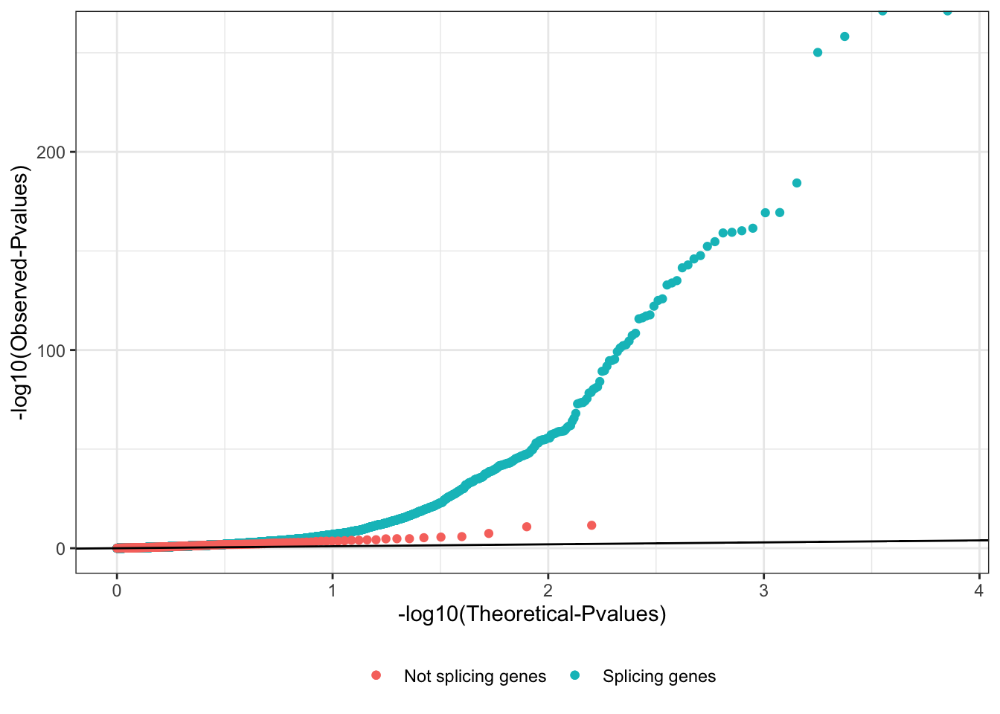
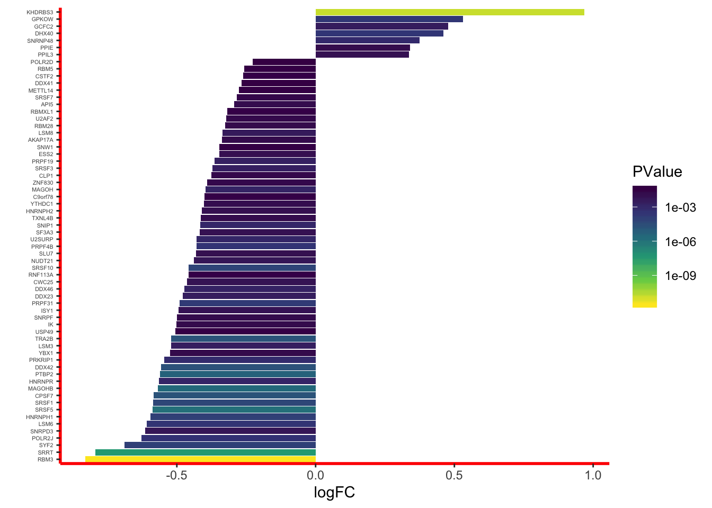

DiffExpression of Splicing Proteins
Benjamin Fair
December 16, 2019
Last updated: 2019-12-16
Checks: 6 1
Knit directory: rna-seq-dhx38/analysis/
This reproducible R Markdown analysis was created with workflowr (version 1.5.0). The Checks tab describes the reproducibility checks that were applied when the results were created. The Past versions tab lists the development history.
The R Markdown is untracked by Git. To know which version of the R Markdown file created these results, you’ll want to first commit it to the Git repo. If you’re still working on the analysis, you can ignore this warning. When you’re finished, you can run wflow_publish to commit the R Markdown file and build the HTML.
Great job! The global environment was empty. Objects defined in the global environment can affect the analysis in your R Markdown file in unknown ways. For reproduciblity it’s best to always run the code in an empty environment.
The command set.seed(20191126) was run prior to running the code in the R Markdown file. Setting a seed ensures that any results that rely on randomness, e.g. subsampling or permutations, are reproducible.
Great job! Recording the operating system, R version, and package versions is critical for reproducibility.
Nice! There were no cached chunks for this analysis, so you can be confident that you successfully produced the results during this run.
Great job! Using relative paths to the files within your workflowr project makes it easier to run your code on other machines.
Great! You are using Git for version control. Tracking code development and connecting the code version to the results is critical for reproducibility. The version displayed above was the version of the Git repository at the time these results were generated.
Note that you need to be careful to ensure that all relevant files for the analysis have been committed to Git prior to generating the results (you can use wflow_publish or wflow_git_commit). workflowr only checks the R Markdown file, but you know if there are other scripts or data files that it depends on. Below is the status of the Git repository when the results were generated:
Ignored files:
Ignored: .Rhistory
Ignored: .Rproj.user/
Untracked files:
Untracked: analysis/20191216_DifferentialExpression_Splicing.Rmd
Untracked: analysis/20191216_polyA_Intersect.Rmd
Untracked: data/Diff_tail_length_WT_vs_DHX.csv
Untracked: data/GO_splicing_ids.fromAmiGO_online_search.tab
Untracked: output/BioMartQuery.Go.Splicing.tab
Unstaged changes:
Modified: analysis/20191203_DiffExpression.Rmd
Modified: analysis/20191203_DifferentialSplicing.Rmd
Note that any generated files, e.g. HTML, png, CSS, etc., are not included in this status report because it is ok for generated content to have uncommitted changes.
There are no past versions. Publish this analysis with wflow_publish() to start tracking its development.
Introduction
I previously did a differential expression analysis comparing the affected vs healthy control RNA-seq libraries. There was no GeneOntology enrichment for splicing proteins. Nonetheless, let’s view all splicing related proteins for their differential expression estimates.
Analysis
First, load necessary libraries
library(tidyverse)
library(biomaRt)
library(knitr)And load the differential expression results.
DiffExp <- read.table("../output/GeneExpression.DE.tab", stringsAsFactors = F, header=T, sep='\t')
head(DiffExp) %>% kable()| ensembl_gene_id | logFC | logCPM | PValue | FDR | external_gene_name | description |
|---|---|---|---|---|---|---|
| ENSG00000279457 | -0.0019184 | 2.294509 | 1.0000000 | 1.0000000 | WASH9P | WAS protein family homolog 9, pseudogene [Source:HGNC Symbol;Acc:HGNC:53981] |
| ENSG00000248527 | -1.4384558 | 3.327765 | 0.0005842 | 0.0028015 | MTATP6P1 | MT-ATP6 pseudogene 1 [Source:HGNC Symbol;Acc:HGNC:44575] |
| ENSG00000228794 | 0.0824910 | 3.223395 | 0.6820905 | 0.7909175 | LINC01128 | long intergenic non-protein coding RNA 1128 [Source:HGNC Symbol;Acc:HGNC:49377] |
| ENSG00000230699 | 0.5618857 | 2.490896 | 0.0208296 | 0.0580221 | AL645608.2 | novel transcript |
| ENSG00000188976 | -0.1738289 | 6.991208 | 0.2377004 | 0.3809051 | NOC2L | NOC2 like nucleolar associated transcriptional repressor [Source:HGNC Symbol;Acc:HGNC:24517] |
| ENSG00000187961 | -0.0084449 | 4.092404 | 0.9652432 | 0.9806255 | KLHL17 | kelch like family member 17 [Source:HGNC Symbol;Acc:HGNC:24023] |
Now get all splicing related gene names from BioMart. I previously used AmiGO website to search ‘splicing’ for related GeneOntology codes and saved them to a file.
SplicingGO.terms <- read.table("../data/GO_splicing_ids.fromAmiGO_online_search.tab", sep='\t', col.names=c("GO.ID", "Description"))
kable(SplicingGO.terms)| GO.ID | Description |
|---|---|
| GO:0048024 | regulation of mRNA splicing, via spliceosome |
| GO:0000398 | mRNA splicing, via spliceosome |
| GO:0005681 | spliceosomal complex |
Now create a Biomart query, using these GO terms as a filter. Note that I set eval=F because sometimes ensembl BioMart servers are so busy that this block of code throws errors depending on how busy the server is. So I just ran this code once, wrote the results to a file in output, and read in the output in the next code chunk.
#Use biomart to get common gene names and ensembl IDs
human_mart <- useMart("ensembl", dataset="hsapiens_gene_ensembl")
MyBioMartQuery <- getBM(attributes = c("ensembl_gene_id","external_gene_name", "description"), mart=human_mart, filters=c("ensembl_gene_id", "go"), values=list(ensembl_ids=DiffExp$ensembl_gene_id, go=SplicingGO.terms$GO.ID))
write.table(MyBioMartQuery, file="../output/BioMartQuery.Go.Splicing.tab", sep='\t')Read in those BioMart query results…
MyBioMartQuery <- read.table("../output/BioMartQuery.Go.Splicing.tab", sep='\t', header=T)
head(kable(MyBioMartQuery))[1] "ensembl_gene_id external_gene_name description "
[2] "---------------- ------------------- -------------------------------------------------------------------------------------------------------"
[3] "ENSG00000188529 SRSF10 serine and arginine rich splicing factor 10 [Source:HGNC Symbol;Acc:HGNC:16713] "
[4] "ENSG00000125944 HNRNPR heterogeneous nuclear ribonucleoprotein R [Source:HGNC Symbol;Acc:HGNC:5047] "
[5] "ENSG00000133226 SRRM1 serine and arginine repetitive matrix 1 [Source:HGNC Symbol;Acc:HGNC:16638] "
[6] "ENSG00000116350 SRSF4 serine and arginine rich splicing factor 4 [Source:HGNC Symbol;Acc:HGNC:10786] "Now plot the differential expression results, specifically of splicing proteins…
SplicingProteinResults <- DiffExp %>%
filter(ensembl_gene_id %in% MyBioMartQuery$ensembl_gene_id)
NonSplicingProteinResults <- DiffExp %>%
filter(!ensembl_gene_id %in% MyBioMartQuery$ensembl_gene_id)
#Histograms of P-values, grouped by splicing gene classification
hist(SplicingProteinResults$PValue)
hist(NonSplicingProteinResults$PValue)
##qq plot of P-values, grouped by splicing gene classificiation. Note that qq-plot might be deceiving way to compare distributions with hugely different number of points in each group. Here there are ~100X more non-splicing genes, so the eyes are drawn to the hundred or so P-values that are smaller than any splicing-gene Pvalues, even though that might be expected by chance.
ggplot(NonSplicingProteinResults, aes(color="Splicing genes", y=-log10(sort(PValue)), x=-log10(1:length(PValue)/length(PValue)))) +
geom_point() +
geom_point(data=SplicingProteinResults, aes(color="Not splicing genes")) +
xlab("-log10(Theoretical-Pvalues)") +
ylab("-log10(Observed-Pvalues)") +
geom_abline() +
theme_bw() +
theme(legend.position="bottom") +
theme(legend.title=element_blank())
##different way to make grouped qq-plot
# ToPlot <- DiffExp %>%
# mutate(SplicingGeneClassification=ensembl_gene_id %in% MyBioMartQuery$ensembl_gene_id) %>%
# add_count(SplicingGeneClassification, name="GroupCount") %>%
# group_by(SplicingGeneClassification) %>%
# mutate(rank = rank(PValue, ties.method = "random")) %>%
# ungroup() %>%
# mutate(expect=rank/GroupCount)
#
# ggplot(ToPlot, aes(color=SplicingGeneClassification, y=-log10(PValue), x=-log10(expect))) +
# geom_point() +
# xlab("-log10(Theoretical-Pvalues)") +
# ylab("-log10(Observed-Pvalues)") +
# geom_abline() +
# ylim(c(0,10)) +
# theme_bw() +
# theme(legend.position="bottom") +
# theme(legend.title=element_blank())
# are these distributions of Pvalues significantly different?
wilcox.test(NonSplicingProteinResults$PValue, SplicingProteinResults$PValue)
Wilcoxon rank sum test with continuity correction
data: NonSplicingProteinResults$PValue and SplicingProteinResults$PValue
W = 540314, p-value = 0.3378
alternative hypothesis: true location shift is not equal to 0No, the distribution of Pvalues for splicing genes is not significantly different than for non-splicing genes. So there is no reason to think splicing genes in general are differentially expressed. the simplest explanation is that DHX38 genotype directly leads to altered expression of some key genes (but not necessarily splicing related genes in general).
Nonetheless, let’s plot the expression changes for all splicing genes. (Not that we have convincing evidence that splicing is altered in a way that is dependent on this DHX38 genotype).
dim(SplicingProteinResults)[1] 159 7#Plot all 159 splicing genes tested
SplicingProteinResults %>%
ggplot(aes(x=reorder(external_gene_name,logFC), y=logFC, fill=FDR<0.1)) +
geom_col() +
coord_flip() +
scale_fill_manual(values=c("black", "red")) +
theme_classic() +
xlab("Splicing genes\nGO:0048024, GO:0000398, GO:0005681") +
theme(
axis.text.y=element_blank(),
axis.ticks.y=element_blank())
#Plot just the significant ones
SplicingProteinResults %>%
filter(FDR<0.1) %>%
ggplot(aes(x=reorder(external_gene_name,logFC), y=logFC, fill=PValue)) +
geom_col() +
scale_fill_viridis_c(trans="log10", direction=-1, option="D") +
coord_flip() +
theme_classic()+
xlab("") +
theme( axis.line = element_line(colour = "red",
size = 1, linetype = "solid")) +
theme(axis.text.y = element_text(size=4))
Conclusions
Splicing related genes as a group are not any more or less differentially expressed than non-splicing related genes. Nevertheless, there are still some significantly differentially expressed splicing genes, like RBM3. Due to experimental design (not isogenic comparisons), it is still unclear whether this change is related to DHX38 genotype.
sessionInfo()R version 3.6.1 (2019-07-05)
Platform: x86_64-apple-darwin15.6.0 (64-bit)
Running under: macOS Catalina 10.15.1
Matrix products: default
BLAS: /Library/Frameworks/R.framework/Versions/3.6/Resources/lib/libRblas.0.dylib
LAPACK: /Library/Frameworks/R.framework/Versions/3.6/Resources/lib/libRlapack.dylib
locale:
[1] en_US.UTF-8/en_US.UTF-8/en_US.UTF-8/C/en_US.UTF-8/en_US.UTF-8
attached base packages:
[1] stats graphics grDevices utils datasets methods base
other attached packages:
[1] knitr_1.26 biomaRt_2.40.5 forcats_0.4.0 stringr_1.4.0
[5] dplyr_0.8.3 purrr_0.3.3 readr_1.3.1 tidyr_1.0.0
[9] tibble_2.1.3 ggplot2_3.2.1 tidyverse_1.3.0
loaded via a namespace (and not attached):
[1] Biobase_2.44.0 httr_1.4.1 viridisLite_0.3.0
[4] bit64_0.9-7 jsonlite_1.6 modelr_0.1.5
[7] assertthat_0.2.1 highr_0.8 stats4_3.6.1
[10] blob_1.2.0 cellranger_1.1.0 yaml_2.2.0
[13] progress_1.2.2 pillar_1.4.2 RSQLite_2.1.4
[16] backports_1.1.5 lattice_0.20-38 glue_1.3.1
[19] digest_0.6.23 promises_1.1.0 rvest_0.3.5
[22] colorspace_1.4-1 htmltools_0.4.0 httpuv_1.5.2
[25] XML_3.98-1.20 pkgconfig_2.0.3 broom_0.5.2
[28] haven_2.2.0 scales_1.1.0 later_1.0.0
[31] git2r_0.26.1 farver_2.0.1 generics_0.0.2
[34] IRanges_2.18.3 withr_2.1.2 BiocGenerics_0.30.0
[37] lazyeval_0.2.2 cli_2.0.0 magrittr_1.5
[40] crayon_1.3.4 readxl_1.3.1 memoise_1.1.0
[43] evaluate_0.14 fs_1.3.1 fansi_0.4.0
[46] nlme_3.1-143 xml2_1.2.2 tools_3.6.1
[49] prettyunits_1.0.2 hms_0.5.2 lifecycle_0.1.0
[52] S4Vectors_0.22.1 munsell_0.5.0 reprex_0.3.0
[55] AnnotationDbi_1.46.1 compiler_3.6.1 rlang_0.4.1
[58] grid_3.6.1 RCurl_1.95-4.12 rstudioapi_0.10
[61] labeling_0.3 bitops_1.0-6 rmarkdown_1.18
[64] gtable_0.3.0 DBI_1.0.0 R6_2.4.1
[67] lubridate_1.7.4 bit_1.1-14 zeallot_0.1.0
[70] workflowr_1.5.0 rprojroot_1.3-2 stringi_1.4.3
[73] parallel_3.6.1 Rcpp_1.0.2 vctrs_0.2.0
[76] dbplyr_1.4.2 tidyselect_0.2.5 xfun_0.11